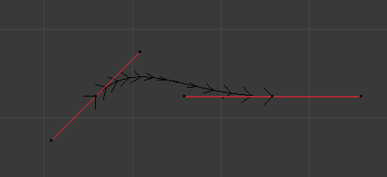

Shape¶
Shape panel.
- Dimensions
- By default, new curves are set to be 3D, which means that control points can be placed anywhere in 3D space. Curves can also be set to 2D which constrain the control points to the curve’s local XY axis.
- Resolution Preview/Render U
The resolution property defines the number of points that are computed between every pair of control points. Curves can be made more or less smooth by increasing and decreasing the resolution respectively. The Preview U setting determines the resolution in the 3D View while the Render U setting determines the curve’s render resolution. If Render U is set to zero (0), then the Preview U setting is used for both the 3D View and render resolution.

Curves with a resolution of 3.

Curves with a resolution of 12.
- Twist Method
A 3D curve has control points that are not located on the curve’s local XY plane. This gives the curve a twist which can affect the curve normals. You can alter how the twist of the curve is calculated by choosing from Minimum, Tangent and Z-Up options from the select menu.
Curves with a twist of Minimum.
Curves with a twist of Tangent.
- Smooth
- Interactively removes twists from the curve. This is useful if a curve has noticeable “kinks” from over twisting; which can be possible when converting meshes to curves.
- Fill Mode
Fill determines the way a curve is displayed when it is beveled (see below for details on Beveling). When set to Half (the default) the curve is displayed as half a cylinder.

Curves with a fill of Half.

Curves with a fill of Full.
- Fill Deformed
- Fills the curve after applying all modification that might deform the curve (i.e. shape keys and modifiers).
- Radius
- Causes the deformed object to be scaled by the set curve radius. Utilized when using a curve as a path or when using the Curve Modifier.
- Stretch
- The Stretch curve option allows you to let the mesh object stretch, or squeeze, over the entire curve. To get the expected result, use this together with the Bounds Clamp option. Utilized when using the Curve Modifier.
- Bounds Clamp
- When this option is enabled, the object and mesh offset along the deformation axis is ignored. This can be useful with the Stretch option or when using a negative axis. Utilized when using the Curve Modifier.